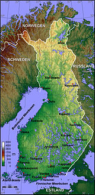

Vissza
Földrajza:

- Fekvése és határai
-
Finnország Európa északi részén található. Délnyugatról a Balti-tenger, délkeletről a Finn-öböl és
nyugatról
a Botteni-öböl határolja. Szárazföldön határos Svédországgal, Norvégiával és Oroszországgal, tengeren
pedig
Észtországgal. Szárazföldi határainak hossza összesen 2563 kilométer, ebből Svédországgal közös határ
545
kilométer, Norvégiával 709 kilométer, Oroszországgal 1309 kilométer. Az ország területe 338 145 km²,
ezzel
Magyarország területének körülbelül három és félszerese.
- Domborzat
-
Finnországot az ezer tó országának is nevezik. Ez az elnevezés nem a legpontosabb, ugyanis 187 888 tavat
és
179 584 szigetet tartanak nyilván. A finn táj többnyire lapos síkság néhány dombbal tarkítva.
Legmagasabb
pontja a Haltitunturi, 1328 m magas. A tavakon kívül a táj erdőkkel borított (az ország területének
csupán
7,4%-a termőföld). A felszínt a jégkorszakban a jégtakaró alakította ki.
- Vízrajz
-
A tó definíciója Finnországban: 500 m²-nél nagyobb állóvíz. Így számolva a finn statisztika 187 888
tavat
tart nyilván. Közöttük a legnagyobb a Saimaa-tó 4400 km² területtel. A tavak, természetes vízfolyások és
mesterséges csatornák hálózatának komoly szerepe van az áruszállításban. A jégkorszak gleccserei nemcsak
számos tavat alakítottak ki, hanem az alacsony tengerparton sok-sok szigetet is, szám szerint 179
584-et.
Szigetek a nagyobb tavakon is vannak. Legfőbb folyói: Kemijoki, Oulujoki,
Torneälven.
- Éghajlat
-
Az éghajlat hideg, időnként kemény telek és viszonylag meleg nyarak által jellemzett északi mérsékelt
övben
található. Hótakaró délen négy, északon hat-hét hónapon át fedi a tájat. A Golf-áramlat hatására az
éghajlat
lényegesen melegebb, mint az az Egyenlítőtől való távolságból következnék. Finnország területének
egynegyede
az északi sarkkörtől északra fekszik. Itt figyelhető meg az éjféli nap jelensége. Annál tovább tart,
minél
északabbra megyünk. Finnország legészakibb pontján a Nap 73 napig süt nyáron egyfolytában, telente 51
napig
nem kel föl.
- Növény-és állatvilág
-
Finnország növényvilága fajokban meglehetősen szegényes. Egészen délen keskeny sávban közép-európai
jellegű
vegyes lombhullató erdő díszlik. Az ország legnagyobb részén tajga nő, az orosz tajga folytatása. A
legészakibb területeken az állandóan fagyott talajon tundra él.
-
Finnország állatvilága viszonylag gazdag. Az emlősök közül 67 faj él ezen a vidéken. Rengeteg róka,
kisebb
prémes állat tenyészik az északi vidékeken. Jelentősen nagy, és vadászható is a medve- és a
farkasállomány.
A jávorszarvasok száma a 150 000-et is meghaladhatja, évente 30-40 000 egyed kilövését engedélyezik. A
rénszarvas az északi vidékek legfontosabb háziállata, vadon él az év legnagyobb részében. A tavak halban
gazdagok, csuka, sügér, lazac a horgászok zsákmánya.